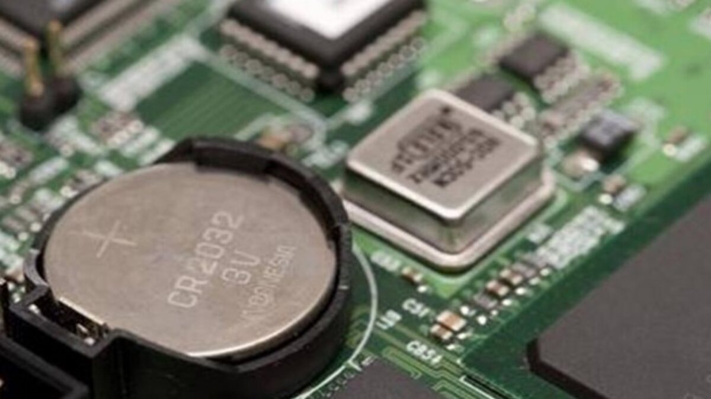

Le CMOS (Complementary metal-oxide-semiconductor)
est une petite quantité de mémoire sur la carte mère
d'un ordinateur qui stocke les paramètres du BIOS
(Basic Input/Output System).
Voir une vidéo d'explication

Le standard UEFI
(de l’anglais Unified Extensible Firmware Interface,
signifiant en français : « Interface micrologicielle
extensible unifiée ») remplace sur certaines
cartes-mères le BIOS.
En savoir plus